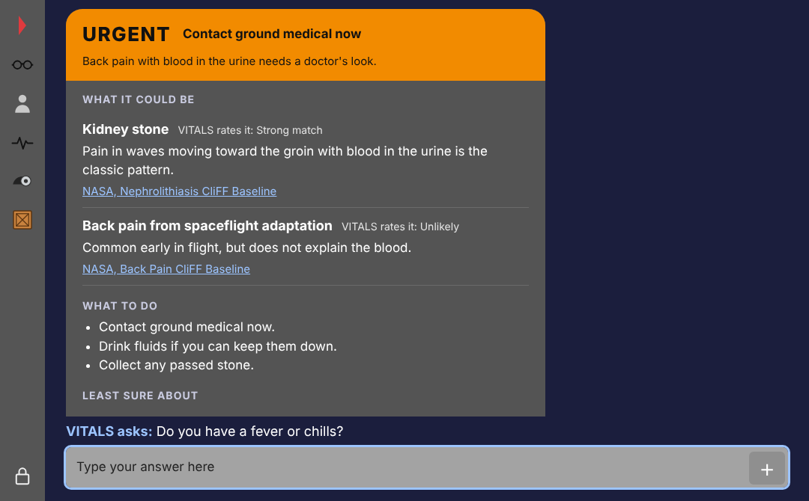
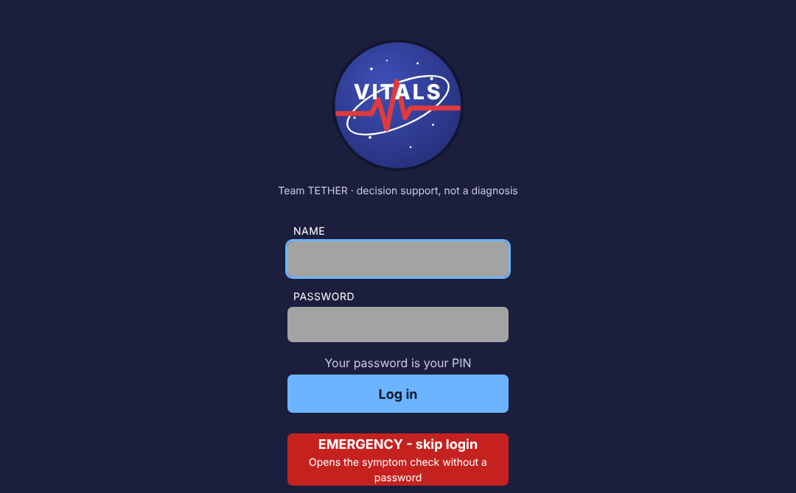
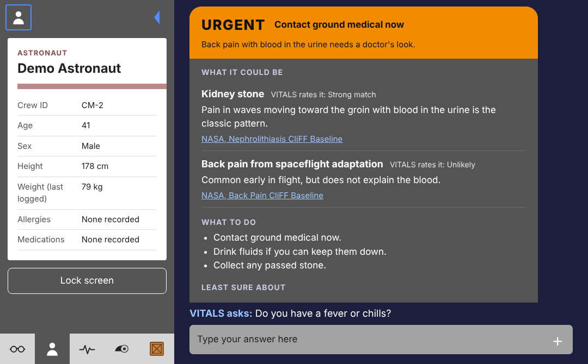
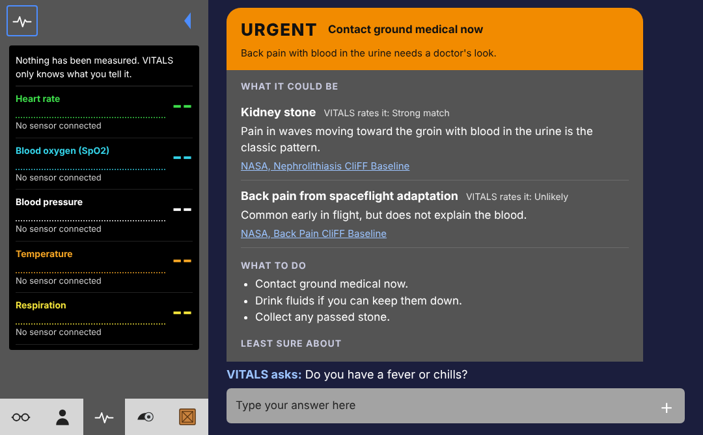

NASA HUNCH 2026–27 · SOFTWARE & TECHNOLOGY
VITALS is a medical decision-support system for long-duration crews. A crewmember describes how they feel in their own words. VITALS says what it could be, how serious it is, what to do now, and which NASA source that comes from — with no internet connection.
Decision support, not a diagnosis. A student project, not a medical device.

HOW IT WORKS
THE SCREENS
Every tap target is at least 44 px. Text passes 4.5:1 contrast. The page is one file that loads with the network cable pulled.



Next: a ground-crew screen that decides what a reviewing doctor sees, and a doctor screen that records agree / disagree for every answer.
WHERE IT STANDS · BENCHMARK, 26 SEP 2026
26 test complaints with known answers, plus 7 that nothing in the knowledge base should match. Run on a desktop GPU.
| Setup | Named the right condition | Missed escalations | Time per answer |
|---|---|---|---|
| Llama 3.2, 3B | 19 of 26 | 0 | about 4 s |
| Llama 3.1, 8B | 22 of 26 | 0 | about 8 s |
| Rule engine alone | 25 of 26 | 0 | instant |
TEAM TETHER
THE ROAD TO HOUSTON